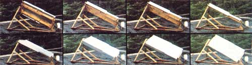

Mother's Super-Simple Solar Tracker
Burkholder improves on Steve Baer's design using freon.
By the Mother Earth News editors
November/December 1977
MOTHER's Dennis Burkholder develops a $34.49 solar tracker that works better than some $200 units we've seen!
Anybody who's ever played around with solar energy (and that includes a lot of us these days) usually devotes a great deal of his or her early experiments to the fabrication and testing of flat-plate, parabolic, and other collectors of the sun's rays. And, sooner or later, he or she begins to think about how much more efficient (about 40% more) most of those collectors would be...if they only had some sort of mechanism built into them to keep them pointed directly at the sun all day long as it travels across the sky.
Now, there are a lot of solar tracking devices floating around at the present time...based on everything from wind-'em-up clockwork mechahisms to silicon cells to bimetallic gizmos of one sort or another. The only trouble is that all these gadgets are either expensive, or complex, or must be recalibrated frequently, or require an outside source of power with constant frequency and voltage and a separate feedback path to correct their errors ... or some combination of the above.
What the world (or, at least, the solar energy experimenters' section of it) has long needed is a supersimple, superinexpensive, superself-contained solar tracker that'll work dang near forever on-and only on-the energy it receives directly from the sun.
STEVE BAER TACKLES THE PROBLEM
The folks here in MOTHER's research lab were impressed a year or so ago when Steve Baer (who often does such things) published a report entitled "Gravity Drivers". Especially since one of the gravity drivers described in that paper looked something like the setup shown in Fig. 1.
Now this is really a clever outfit. What you've got, you see, is a flatplate solar collector supported on a pivot so that it can follow the sun as It travels from east to west during the day. And the mechanism which makes the collector track the sun that way... is hardly any "mechanism" at all: just two long tanks filled with Freon 12, partly shaded from the sun, and connected together by a hose.
Why Freon 12? Because unlike water, which-at sea level-boils (which is to say that its vapor pressure exceeds atmospheric pressure) at 212°F... Freon 12 boils at a somewhat lower temperature than -30°F. Or, to say it the other way around, Freon 12 poured out into a bowl and exposed to the air will stay in that bowl (remain a liquid) only at temperatures colder than -30°F. At any higher temperature, it will simply boil away?evaporate?into the atmosphere.
We can and do use this freon all the time (in refrigerators, air conditioning circuits, spray cans, etc.), however, and we do it quite easily ... merely by keeping it bottled up inside heavy coils of tubing, pressure containers, and other such "closed systems". When it is contained this way, the freon can build up a pretty good head of pressure (61.4 pounds/ square inch at 50°F, 131.9 psi at 100°F, 249.3 psi at 150°F, 430 psi at 200°F, etc.) but, as long as our closed system doesn't rupture, the freon is forced to stay right where we want it.
It is also interesting to note that not all the freon in a closed system has to boil (change from a liquid to a gas) in order for the pressure inside that sealed coil of tubing, pressure bottle, tank, or whatever to increase in the dramatic way just described. Frequently, in fact (depending on the size and shape of a freon container and the way in which heat is applied to it), the pressure inside a bottle or tank of the liquid can be raised 50 or more psi by the boiling away (the changing from a fluid to a gas) of only a few drops of the trapped freon.
Aha! Now we know why Steve Baer's tracking mechanism works. His two long tanks are filled with freon and laid perpendicular to the sun's rays so that Ole Sol's outpouring of heat energy will have the maximum effect on their contents. (The maximum possible surface of the tanks is directly exposed to the sun so that even the least amount of solar radiation will raise the temperature of the containers-and the freon inside them-as much as possible.)
In addition to that, Steve's two tanks are connected by a heavy-duty hose. Which means, when the two containers are equally exposed to the sun-and thus, equally heated-that the pressure inside one will exactly equal the pressure inside the other. And the two tanks will just sit there, getting warmer and warmer, with more and more of the liquid freon in each container boiling into a gas and forcing up the psi readings on the whole (two tanks and a hose) system. If the tanks were transparent, they'd look like Fig. 2... with more and more of the liquid freon in the bottom of each container boiling into the gas trapped in the upper portions of the tanks.
Likewise, when the two containers are equally exposed to less and less of the sun's rays, their contents cool equally. And more and more of the gas in each tank is converted back into a liquid-again, on an equal basis-and that's all that happens.
But what if one of the containers is heated more than the other? Well, not a whole lot would happen if that hose between the two tanks ran from the top of one to the top of the other tank. A little gas would siphon from the hot container over to the cool one ... and that would be that.
The hose on Steve's system does not run from the top of one tank to the top of the other one, though. It runs from the bottom section of one container to the bottom of the other. Which means? Which means that a slightly higher gas pressure in one of the vessels can push a lot of the liquid freon from that tank over into the other one. And, unlike a gas, that liquid freon is heavy. And when it shifts from the tank mounted on one side of the collector ... to the tank mounted on the other side ... it just naturally causes the pivoted collector to tip in the direction of the shifted weight.
This action is illustrated in Fig. 3 ... which also shows the function of the shade mounted on each of the freon tanks. As you can see, by put: ting together a couple of tanks of Freon 12, a connecting hose, and two small shades just the way that he's put them together ... Steve Baer has created a remarkably simple and low-cost solar tracker that wants to "lock onto" the sun and follow it all day long.
DENNIS BURKHOLDER IMPROVES THE BAER DESIGN
All well and good ... at least In theory. When MOTHER researcher Dennis Burkholder built one of the trackers, however, he soon found that Steve Baer's beautiful theory left a great deal to be desired in the real world. For one thing, a collector equipped with one of the tracking mechanisms tended either to follow the sun very sluggishly (if at all) ... or to become so hyperactive about the whole idea that it wanted to endlessly "hunt" back and forth across an area extending 10 to 20 degrees on either side of Ole Sol's actual position. And for another, the mere shifting of the freon's weight wasn't a very positive method of keeping the collector pointed at the sun: Even small vagrant breezes-let alone the real he-winds of a summer storm-were enough to slam the trackerequipped flat plate from one extreme of its travel to the other.
Clearly, as good as the basic idea was, Steve Baer's solar tracker could be improved. Which is just what Dennis did by [1] severing the hose that connects the two tanks of freon, [2] inserting a doubleacting hydraulic cylinder, [3] mounting the cylinder's case to the supporting base of the flat-plate collector, and [4] connecting the cylinder's piston to an eccentric arm fastened to the pivoted collector itself. He also moved the shades from the outside edges of the two tanks to their insides (originally just to make the whole assembly more compact but, as you'll see, this change added a certain very important flexibility to MOTHER's tracking collector).
What a difference! As soon as Burkholder's modifications (Fig. 4) were cranked into the Baer design, MOTHER's tracking collector became a real dream machine. Set the unit out in the sun facing any direction (as long as its, axis is lined up north/south, of course) ... and within 10 to 12 minutes the movable portion of the rig will have rotated around and locked on to the sun. And it'll then stay locked on, with no hunting and no slamming ... faithfully gazing directly at Ole Sol all day long until he finally slips beneath the western horizon.
The collector then patiently watches that western horizon all through the night. Until the next morning when-thanks to the way Dennis has mounted its shades (so that the first rays of the sun fall on the uppermost cylinder of freon but not on the lower one) and its eccentric arm (so that as the high tank's freon boils, the collector is cranked around to make that side of the flat plate the low one)?the whole mechanism automatically turns to face the eastern horizon ... where it begins faithfully "watching" the sun move across the heavens again.
THE PRICE IS RIGHT
So there you have it: a supersimple, selfcontained solar tracking device that works just the way you want it to. And the price is right too!
Dennis-one of the world's more accomplished scroungers? picked up his double-acting hydraulic cylinder (which has a 1-1/4" bore and a five-inch stroke, but that's not at all critical) in a local junkyard for $2.00. Nine feet of type "M" hard copper tubing (for the freon tanks) set him back another $8.64. The four sweatweld end caps for the freon tanks cost $2.40, two 1/4" OD (outside diameter) flare by 1/4" IPS (inside pipe size) fittings 70 cents, two 36-inch-long freon transfer hoses $13.00, two Schroder valves $2.00, three pounds of oiled Freon 12 $4.50, and one small spray can of flat black Rustoleum $1.25. Grand total: $34.49. Which as anyone experienced in the field can tell you, ain't bad for such a slick little solar tracker.
AMPLIFICATIONS AND DETAILS
MOTHER's solar tracking mechanism, essentially, can be called a small and very slow "vapor engine". As Dennis has designed it, the apparatus consists of two reservoirs (both painted black to increase their absorption of the sun's rays) of a low-boiling-point working fluid (Freon 12). The reservoirs are mounted one on each side of a pivoted solar collector, and the two tanks are connected by freon transfer hoses to a double-acting hydraulic cylinder (one tank to one input on the cylinder and the second reservoir to the other).
Each container of working fluid is shaded an equal amount so that when the sun moves across the sky the shadow from the shades will fall on one reservoir more than the other. This causes the tank with greater solar exposure to collect more heat and boil an increased amount of its working fluid. The difference between the higher pressure that this action creates in the warmed reservoir and the lower pressure maintained in the unwarmed reservoir works through the still-liquid freon to either extend or retract the piston in the hydraulic cylinder. As a result, the movement of the piston (which is connected to the pivoted collector through an eccentric arm) either pushes or pulls the solar absorption panel into alignment with the sun.
Freon 12 was chosen as the mechanism's working fluid because it [1] provides, at typical operating temperatures, enough pressure to operate the system in a very positive manner ... but not enough to burst any of the tracker's components, [2] is compatible with all other materials used in the assembly, [3] is non-explosive and relatively non-toxic, [4] has a moderate price tag, and [5] is available almost anywhere in the world from any refrigeration service shop.
Burkholder constructed the two freon tanks mounted on MOTHER's tracking collector from nine feet (4-1/2 feet each) of one-inch "M"-type (thin wall) hard copper tubing. He did this by soldering a sweat-weld sealing cap on each end of each tube. He also soldered a Schroder valve (a metal valve similar to the valve stem found on an automobile or bicycle tire, which may be purchased at most refrigeration and air conditioning repair shops) into each pipe near one end.
It was then a simple matter to connect a vacuum pump to the Schroder valve, evacuate the air from a tube, and charge it half full with the oiled freon. (Note: The oil in the "oiled freon" is important. Unoiled freon will quickly dry out the neoprene "0" rings inside the hydraulic cylinder and cause its piston to bind up and stop working.) The charged tubes were finished by giving them a coat of flat black Rustoleum.
The shades used on MOTHER's rig were constructed from .032" scrap aluminum sheet ... but painted Masonite, plywood, or any other stiff weather-resistant material would have worked as well. The important thing to remember here is that your tracking mechanism will become increasingly sensitive as you make your shades taller and taller.
Two 36"-long refrigerant transfer hoses (available from air conditioning and refrigerator supply outlets and most auto supply stores) were used to connect the two freon reservoirs to the double-acting power cylinder. They were attached to the tanks with fittings that automatically depressed the cores and opened them as they were screwed onto the Schroder valves.
As already noted, the doubleacting hydraulic cylinder on MOTHER's tracking collector has a 1-1/4" bore and a five-inch stroke. Any double-acting cylinder with a bore of one to two inches and a stroke of four to ten inches, however, should work as well (you'll just have to build your collector's base and vary its eccentric arm to fit). If you can't find a $2.00 bargain cylinder the way Dennis did, try these sources of relatively inexpensive hydraulic gear: Palley Supply Company, Dept. TMEN, P.O. Box 2066, Whittier, Calif. 90610 or Surplus Center, Dept. TMEN, P.O. Box 82209, Lincoln, Neb. 68501.
Bear in mind, as you design your version of MOTHER's tracker, that the relationship of the movable collector's center of gravity to its pivot point can be an important one. If the CG is too high, the collector can "slam" from one side to the other and not function properly at all. A lower CG, however, can smooth that erratic action right out and make your collector track slowly and smoothly, just the way it should.
ONE FINAL NOTE
After we'd had Dennis Burkholder's solar tracker working for a few weeks, we found out that Ole Dennie wasn't quite the genius we'd thought he was. A check of patents and papers in the solar energy field turned up the fact that [1] Dr. E.A. Farber and a couple of others working at the University of Florida's Solar Energy and Energy Conversion Lab had originated a very similar device almost a year before MOTHER's was built, and [2] still another similar tracker was patented in June of 1977 by Roland W. Robbins, Jr. of Ridgecrest, California.
So great minds, as the old saying goes, still do run in the same channels. And, no matter who was first with this particular idea, MOTHER's team looks forward to seeing one version or another of this simple, lowcost, trouble-free tracking mechanism put into very wide use.
 PHOTOS BY J. WEILAND FIG. 3-A: The sun's rays warm right tank but not the left one. FIG. 3-B: As pressure builds in right tank, liquid freon is forced into left one and collector tilts in that direction. FIG. 3-C: As the collector turns more and more directly toward the sun, its left tank also begins to heat. As pressure builds in that container, it begins to accept less and less liquid freon from the right tank. Equilibrium Is achieved when the two containers are equally exposed to the sun. The system, in short, wants to automatically ""lock onto"" the sun and track it all day long. |
FIG. 4: The collector has been facing west (left). As the sun appears on the eastern horizon (to the right), however, the freon in Its unshaded tank has begun to warm and expand. This is pushing the piston down in the hydraulic cylinder and, as the contracting piston pulls on the eccentric arm fastened to the pivoted flat-plate collector, the solar collector is pulled over to face the fresh morning sun. |
 MOTHER's tracker does the job. Plumbing at foot of collector is part of circulating water system and has nothing to do with tracking mehanism. |
|
 |
|
|